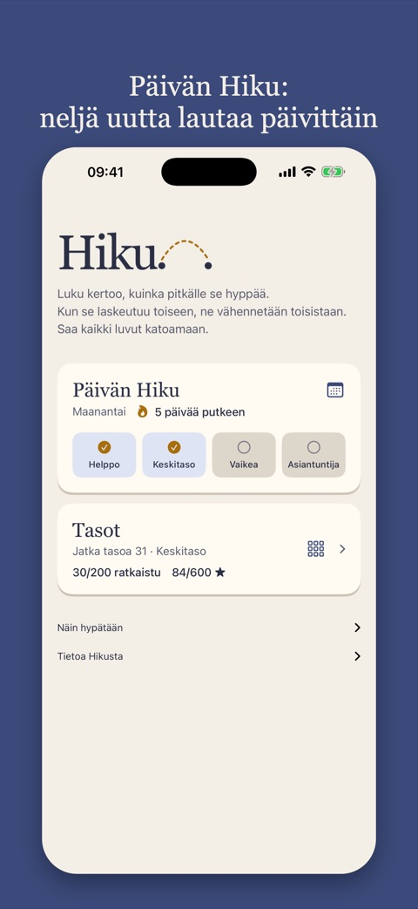
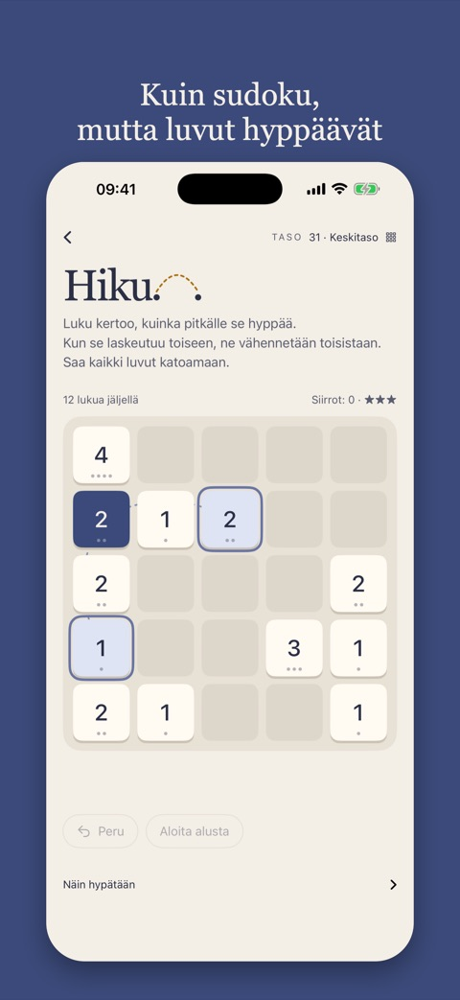
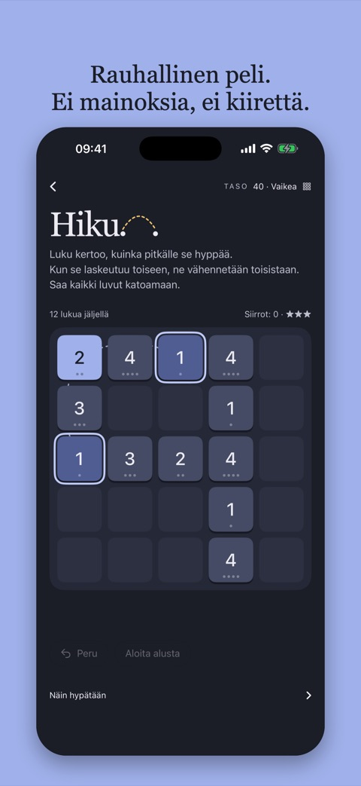

Sovellus iPhonelle
Päivän Hiku, 50 tasoa, jotka opettavat niksit, ja widget kotinäytölle. Ei mainoksia, ei tiliä. Pelattavissa VoiceOverilla, ruudunlukijalla tai pelkällä näppäimistöllä.



Uutissivustoille ja julkaisijoille
Upota Päivän Hiku sivustollesi maksutta kahdella rivillä koodia.
Näin Hikua pelataan
Luvut hyppäävät ja vähennetään toisistaan. Säännöt oppii minuutissa; laudoissa voi mennä pidempään.
Hikun matematiikka
Miksi jotkin siirrot tekevät laudasta mahdottoman? Vastaus löytyy pariteetista ja yhtä suurista summista.
Tietosuoja
Hiku ei kerää henkilötietoja. Sovelluksessa ei ole tiliä eikä mainoksia, eikä se seuraa sinua sovellusten tai verkkosivustojen välillä.
Ratkaisemasi tasot, tähtesi ja Päivän Hikun tulokset tallentuvat vain omaan puhelimeesi. Widget lukee samat tiedot sieltä. Kaikki poistuu, jos poistat sovelluksen.
Versiosta 1.2 alkaen sovellus lähettää muutaman nimettömän virstanpylvään, jotta näemme, kuinka pitkälle pelaajat etenevät: kun olet ratkaissut 1, 9, 10, 20, 30, 40 tai 50 tasoa (sekä 100, 150 ja 200), kun ratkaiset Päivän Hikun laudan ja millä tasolla, ja kun Päivän Hiku -putkesi saavuttaa 3, 7, 14, 30 päivää tai enemmän. Ne lähetetään TelemetryDeckille, tietosuojaa varten tehdylle eurooppalaiselle analytiikkapalvelulle. Niissä ei ole nimeä, sähköpostia, sijaintia tai muuta, joka voitaisiin yhdistää sinuun; asennus saa satunnaisen numeron, josta tehdään yksisuuntainen tiiviste ennen lähettämistä. Käytämme lukuja vain pelin parantamiseen.
Selaimen Päivän Hiku ei aseta evästeitä eikä lähetä pelitietoja. Tuloksesi tallentuvat vain selaimeesi. Sivusto laskee käynnit Cloudflare Web Analyticsilla, joka ei käytä evästeitä eikä seuraa sinua sivustolta toiselle: näemme, kuinka moni tuli ja miltä sivustolta, emme sitä, kuka.
Hiku ChatGPT:ssä ja Claudessa on sama peli kuin verkkosivuilla. Lautoja näyttävä palvelin ei tallenna mitään sinusta tai keskustelusta: se saa tietää vain, mitä lautaa pyydettiin, eikä peli lähetä pelitietoja. Keskusteluun kirjoittamasi käsittelee ChatGPT tai Claude omien tietosuojakäytäntöjensä mukaisesti. Hiku ei näe sitä.
Tuki
Kysyttävää, löysitkö virheen, vai oletko jumissa laudalla? Lähetä sähköpostia osoitteeseen es@rubberduck.no.